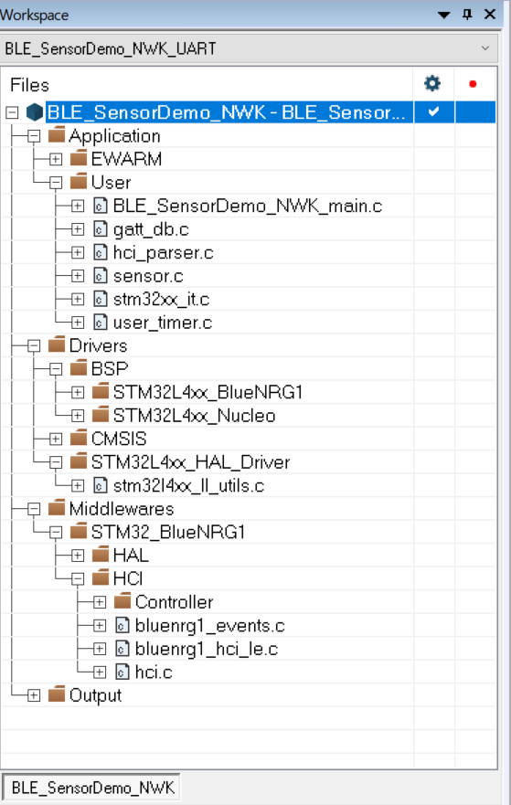
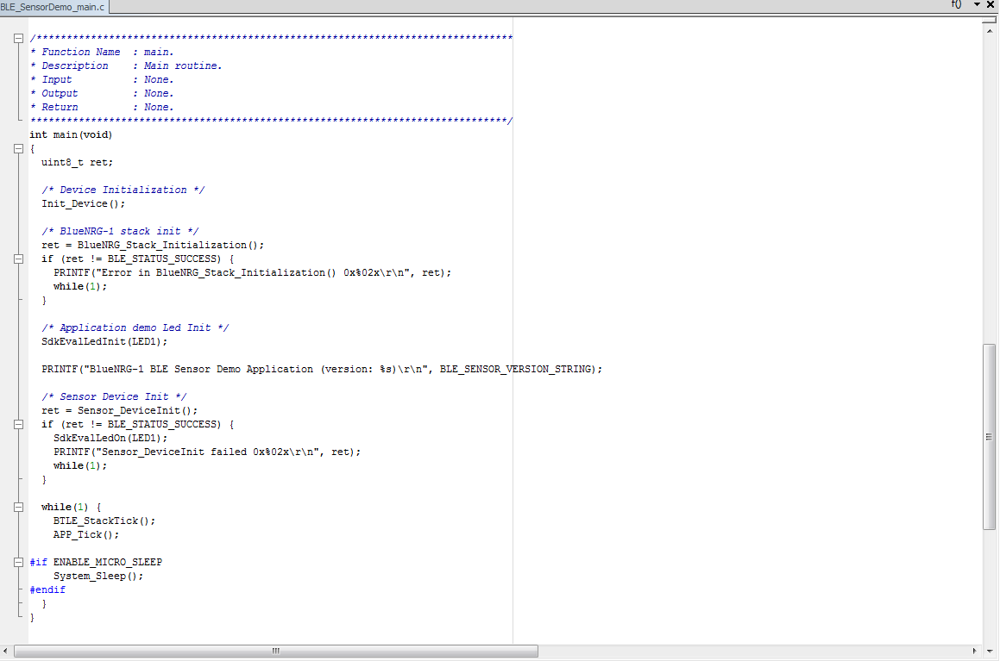
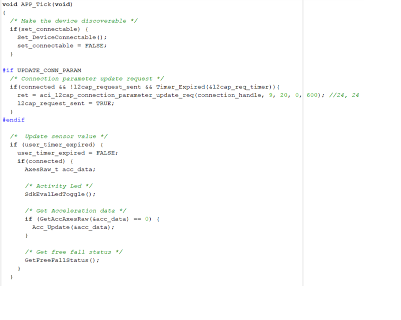

This document describes an example of the BlueNRG-1,2 network coprocessor UART protocol implementation on a STM32L4 microcontroller (NUCLEO-L476RG platform).
The document content is valid for BlueNRG-1,2 devices.
The BlueNRG-1,2 device is configured as a network coprocessor (UART mode).
Hardware Platforms
- BlueNRG-1 development platforms (order code: STEVAL-IDB007V1 (NRND), STEVAL-IDB007V2, STEVAL-IDB007V1M)
- BlueNRG-2 development platforms (order code: STEVAL-IDB008V1, STEVAL-IDB008V2, STEVAL-IDB009V1, STEVAL-IDB008V1M (coming next))
- STM32L4 Nucleo platform (order code: NUCLEO-L476RG)
- NOTES:
-
When using a NUCLEO-L476RG platform, install the related ST-Link, ST-Link/V2, ST-Link/V2-1 USB driver signed for XP, Windows7, Windows8 (STSW-LINK009).
-
When using a NUCLEO-L476RG platform, make sure the ST-Link firmware is updated to latest version available on ST web page. This can be checked/achieved by using the STM32 ST-LINK Utility v3.6.0 (or later).
Hardware Platforms Prerequisites: connections and HW modifications
- The following connections must be performed between the 2 platforms (Nucleo-L476RG & STEVAL-IDB007Vx/STEVAL-IDB008Vx/STEVAL-IDB009Vx):
| Pin Function MCU side | Nucleo-L476RG pin/connector (UART1) | STEVAL-IDB007Vx/STEVAL-IDB008Vx/STEVAL-IDB009Vx pin/connector |
| UART TX | PA9/CN10.21/CN5.1 | IO11 (UART RX) |
| UART RX | PA10/CN10.33/CN9.3 | IO8 (UART TX) |
| UART CTS | PA11/CN10.14 | IO6 (UART RTS) |
| UART RTS | PA12/CN10.12 | IO13 (UART CTS) |
| BLUENRG-1,2 BOOT (1) | PB14/CN10.28 | IO7 |
| BLUENRG-1,2 RESETN | PA8/CN10.23/CN9.8 | RESETN |
| VDD | VDD | VBLUE (2) |
| GND | GND | GND |
- Notes:
-
(1) BLUENRG-1,2 BOOT pin to be connected only for bootloader mode.
-
(2) Unplug USB cable from STEVAL-IDB007Vx/STEVAL-IDB008Vx/STEVAL-IDB009Vx platform.
- The following HW modifications must be done on the BlueNRG-1/STEVAL-IDB007Vx, BlueNRG-2/STEVAL-IDB008Vx,STEVAL-IDB009Vx platforms in order to use it as Network coprocessor with Nucleo-L476RG:
-
Remove resistors R49, R48, R27, R32.
-
Remove capacitors C26.
-
Open JP1 jumper.
-
JP2 jumper in 1-2 position.
Software Prerequisites: SW Configuration
- The following SW steps must be performed on the selected BLE platform (STEVAL-IDB007Vx, STEVAL-IDB008Vx, STEVAL-IDB009Vx):
-
Configure the BlueNRG-1,2 device as a network coprocessor (UART mode), by loading the available binary images (using the "drag and drop" mass storage upgrade capability by selecting the associated IDB007/8/9VX platform on PC Computer Window).
-
Two configurations are supported:
-
UART no HW flow control. Related binary files are:
-
Firmware\BLE_Examples\DTM\BlueNRG-1\DTM_UART.hex for the selected BlueNRG-1 platform;
-
Firmware\BLE_Examples\DTM\STEVAL-IDB007V1M\DTM_UART.hex for the selected BlueNRG-1, STEVAL-IDB007V1M platform;
-
Firmware\BLE_Examples\DTM\BlueNRG-2\DTM_UART_32MHz.hex for the selected BlueNRG-2 platform.
-
UART with HW flow control (sleep management support). Related binary files are:
-
Firmware\BLE_Examples\DTM\BlueNRG-1\DTM_UART_sleep.hex for the selected BlueNRG-1 platform;
-
Firmware\BLE_Examples\DTM\STEVAL-IDB007V1M\DTM_UART_sleep.hex for the selected BlueNRG-1, STEVAL-IDB007V1M platform;
-
Firmware\BLE_Examples\DTM\BlueNRG-2\DTM_UART_sleep.hex for the selected BlueNRG-2 platform.
STM32L Network coprocessor framework structure
| Path | Description |
| Nucleo-L476RG SDK Drivers | Library\STM32L\Drivers\BSP\STM32Lxx_Nucleo | SDK Drivers for NUCLEO-L476RG Leds, COM, timers |
| STM32L4 Nucleo - BlueNRG-1,2 | Library\STM32L\Drivers\BSP\STM32Lxx_BlueNRG1 | NUCLEO-L476RG UART driver for interfacing to BlueNRG-1,2 network coprocessor |
| STM32L4 CMSIS | Library\STM32L\Drivers\CMSIS | CMSIS files for STM32LXXX |
| STM32L4 Cube HAL drivers | Library\STM32L\Drivers\STM32L4xx_HAL_Driver | STM32L4xx HAL drivers (Cube framework) |
| HAL drivers | Library\STM32L\Drivers\Middlewares\ST\STM32_BlueNRG1\HAL | HAL drivers (osal, low power, timers) |
| ACI framework | Library\STM32L\Middlewares\ST\STM32_BlueNRG1\SimpleBlueNRG1_HCI | BLE stack ACI framework APIs for interfacing to the BlueNRG-1,2 BLE stack features and events |
| BLE Demonstration application | Project\STM32L\BLE_Beacon_NWK | BLE Beacon demo application |
| BLE Demonstration application | Project\STM32L\BLE_ChatMasterSlave_NWK | BLE Chat Master/Slave demo application |
| BLE Demonstration application | Project\STM32L\BLE_SensorDemo_NWK | BLE Sensor demo application |
| BLE Demonstration application | Project\STM32L\BlueNRG_Stack_IFR_Updater | BLE demo application targeting BLE Stack/IFR updater demo application |
| BLE Test application | Project\STM32L\DTM_NWK | BLE Direct Test Mode application |
Demonstration Applications
- The following STM32L - BlueNRG-1,2 network coprocessor (UART mode) demonstrations application are available (EWARM IAR toolchain 8.40.1 or later):
-
BLE Beacon application which configures a beacon device:
-
IAR project supporting STM32L4 device and UART no HW flow control (compatible with DTM_UART).
-
UART workspaces: BLE_Beacon_NWK_UART and BLE_Beacon_NWK_UART_LowPower.
-
IAR project supporting STM32L4 device and UART with HW flow control (compatible with DTM_UART_sleep).
-
UART workspaces: BLE_Beacon_NWK_UART_HWFlowCtrl.
-
BLE Chat Master & Slave application which allows to target a BLE Chat application scenario with same binary image:
-
IAR project supporting STM32L4 device and UART no HW flow control (compatible with DTM_UART).
-
UART workspaces: BLE_ChatMasterSlave_NWK_UART.
-
IAR project supporting STM32L4 device and UART with HW flow control (compatible with DTM_UART_sleep).
-
UART workspaces: BLE_ChatMasterSlave_NWK_UART_HWFlowCtrl.
-
Sensor Demo application with emulated acceleration and environmental sensors values (emulated):
-
IAR project supporting STM32L4 device and UART no HW flow control (compatible with DTM_UART).
-
UART workspaces: BLE_SensorDemo_NWK_UART and BLE_SensorDemo_NWK_UART_LowPower.
-
IAR project supporting STM32L4 device and UART with HW flow control (compatible with DTM_UART_sleep).
-
UART workspaces: BLE_SensorDemo_NWK_UART_HWFlowCtrl.
-
BLE Stack/IFR updater application for DTM/BLE stack FW update and IFR update :
-
IAR project supporting STM32L4 device (UART workspaces: DevConfig_Updater_UART, Stack_Updater_UART, Stack_Updater_Ymodem_UART).
-
DTM application to be programmed on STM32L4- NUCLEO L476RG in order to use the BlueNRG GUI tool (file DTM_NWK_UART.hex):
-
IAR project supporting STM32L4 device and UART no HW flow control (compatible with DTM_UART).
-
UART workspaces: DTM_NWK_UART.
-
IAR project supporting STM32L4 device and UART with HW flow control (compatible with DTM_UART_sleep).
-
UART workspaces: DTM_NWK_UART_HWFlowCtrl.
- NOTES:
-
Prebuilt binary images are available on \Firmware\STM32L folder
STM32L4 - Network coprocessor application structure
- This section provides the main guidelines to be followed when implementing a STM32L - BlueNRG-1,2 demo application (project structure, main() layout, APP_Tick() layout, event callbacks management).
Project structure
|

|
| Figure 1: BLE Sensor Demo, Release_UART configuration example |
- Figure 1 shows the project structure of the STM32L-BlueNRG-1,2 BLE Sensor application (Release_UART workspace). This framework can be taken as reference for implementing any network coprocessor application.
Application structure: Main function
|

|
| Figure 2: BLE Sensor Demo, main() Function |
- Figure 2 shows the application main() structure of the STM32L-BlueNRG-1,2 BLE Sensor application (it's a typical framework which can be taken as reference for any other application with proper customization):
-
Init_Device(): it initializes the STM32L device (HAL, clock, ...) and the UART interface for BlueNRG-1,2 network coprocessor.
-
BlueNRG_Stack_Initialization(): it initializes the ACI framework lists and it reset the BlueNRG-1,2 device
-
Sensor_DeviceInit(): it calls the BlueNRG-1,2 APIs for configuring the BLE stack (set public address, init GATT and GAP layers, set TX power level, set security settings, add the specific Sensor Demo services and chracteristics, init user timers required for the Sensor Demo application.
-
BTLE_StackTick(): BLE stack tick APIs which allows to process the BLE stack events coming from BlueNRG-1,2 BLE stack.
-
APP_Tick(): application tick function which implements the application specific state machine.
-
System_Sleep(): low power managment API.
- NOTE: The STM32L-BlueNRG-1,2 BLE APIs protoypes are defined on the Library\STM32L\Middlewares\ST\STM32_BlueNRG1\SimpleBlueNRG1_HCI\includes\ folder header files (bluenrg1_gap_aci.h,bluenrg1_gatt_aci.h,bluenrg1_l2cap_aci.h,bluenrg1_hal_aci.h, bluenrg1_hci_le.h,bluenrg1_hal_aci.h).
Application structure: APP_Tick() function
|

|
| Figure 3: BLE Sensor Demo, APP_Tick() function |
- Figure 3 shows the application tick (APP_Tick()) function structure related to the STM32L-BlueNRG-1,2 BLE Sensor application:
-
It checks if application can enter in discoverable mode (Set_DeviceConnectable())
-
It performs application specific actions:
-
Notify the Acceleration characteristic at specific interval.
-
If Free Fall conditions is detected, it notified the specific Free Fall characteristic.
Application structure: BLE stack events callbacks
|
|
|
| Figure 4: BLE Sensor Demo, hci_le_connection_complete_event() callback |
- Figure 4 shows the hci_le_connection_complete_event() event callback required from the STM32L-BlueNRG-1,2 BLE Sensor application
-
Each time a specific BLE event is raised from the BlueNRG-1,2 BLE stack the associated BLE stack event callback function is called.
-
User is requested to implement ONLY the required BLE events callbacks according to the specific application needs.
-
The STM32L-BlueNRG-1,2 BLE events callbacks protoypes are defined on the Library\STM32L\Middlewares\ST\STM32_BlueNRG1\SimpleBlueNRG1_HCI\includes\bluenrg1_events.h header files.

 1.8.10
1.8.10